# A tibble: 24,320 × 5
Quarter Region State Purpose Trips
<date> <chr> <chr> <chr> <dbl>
1 1998-01-01 Adelaide South Australia Business 135.
2 1998-04-01 Adelaide South Australia Business 110.
3 1998-07-01 Adelaide South Australia Business 166.
4 1998-10-01 Adelaide South Australia Business 127.
5 1999-01-01 Adelaide South Australia Business 137.
6 1999-04-01 Adelaide South Australia Business 200.
7 1999-07-01 Adelaide South Australia Business 169.
8 1999-10-01 Adelaide South Australia Business 134.
9 2000-01-01 Adelaide South Australia Business 154.
10 2000-04-01 Adelaide South Australia Business 169.
# ℹ 24,310 more rowsForecasting
Business Data Analytics, BST811/BST851
Prof. Bahman Rostami-Tabar, Cardiff University
Learning objectives
By the end of this session, you are able to:
- Describe the forecasting workflow
- Identify factors affecting forecastability
- Describe forecasting methods
- Fit forecasting models using fable
- Produce forecasts using fable
- Evaluate forecast accuracy and residual diagnostics
- Visualise forecast distributions

What is a forecast?
Forecasting is estimating how the sequence of observations will continue into the future based on all of the information available at the time when we generate the forecast.
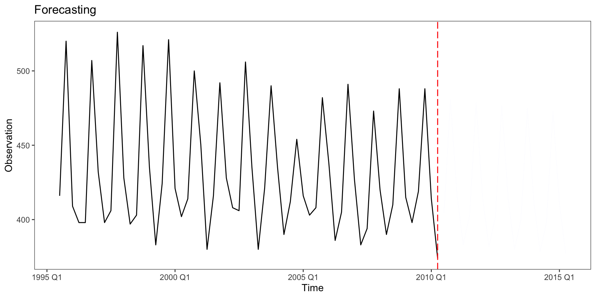
What is a forecast?
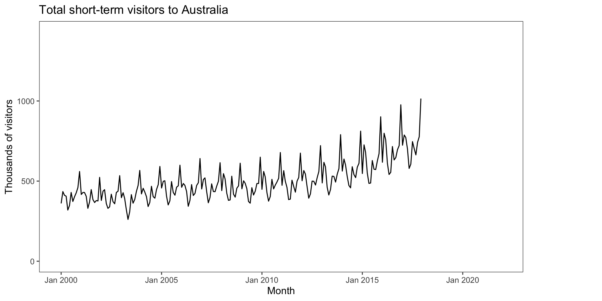
What is a forecast?
A forecast is an estimate of the probability distribution of a variable to be observed in the future.
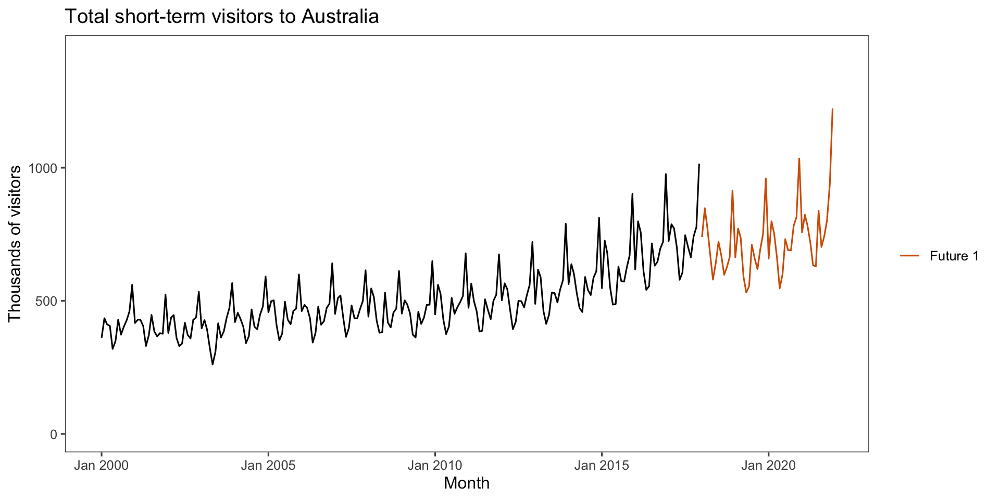
What is a forecast?
A forecast is an estimate of the probability distribution of a variable to be observed in the future.
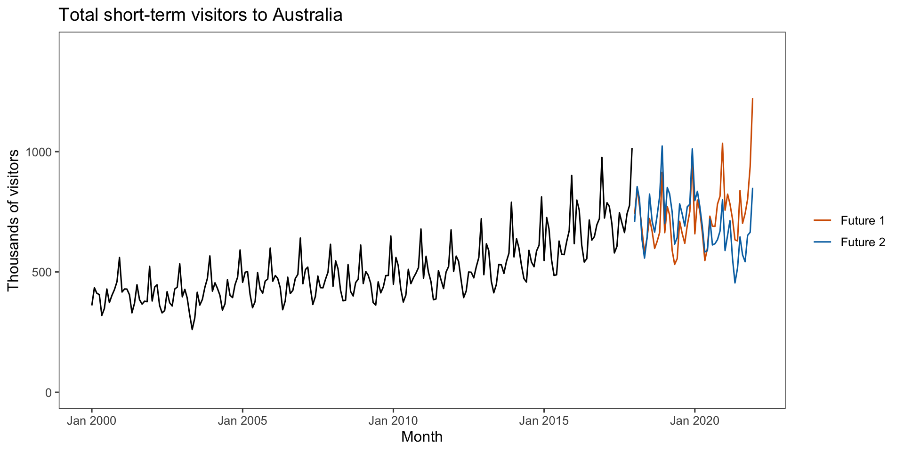
What is a forecast?
A forecast is an estimate of the probability distribution of a variable to be observed in the future.
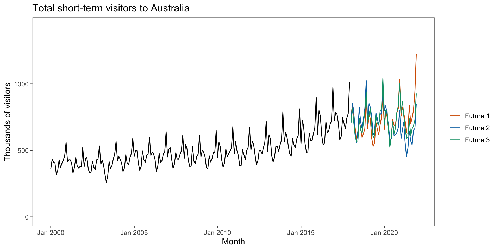
What is a forecast?
A forecast is an estimate of the probability distribution of a variable to be observed in the future.
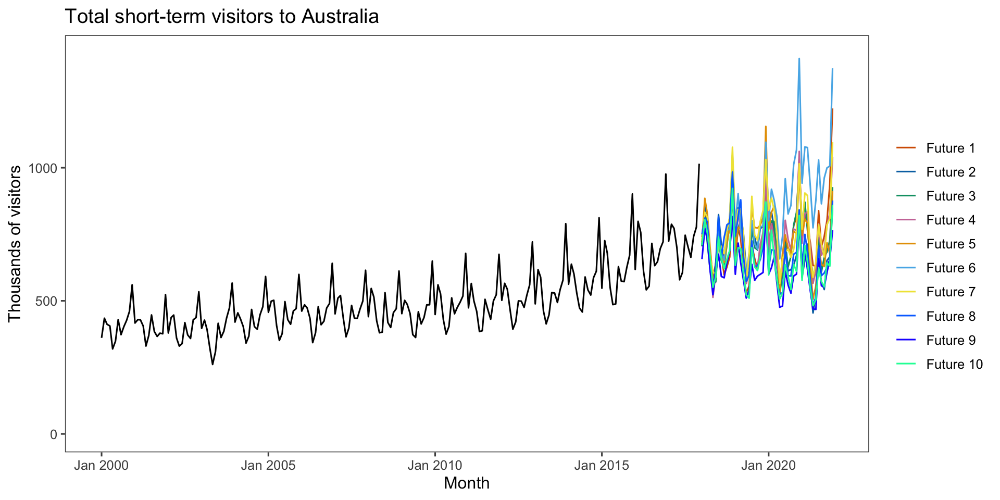
What is a forecast?
A forecast is an estimate of the probability distribution of a variable to be observed in the future.
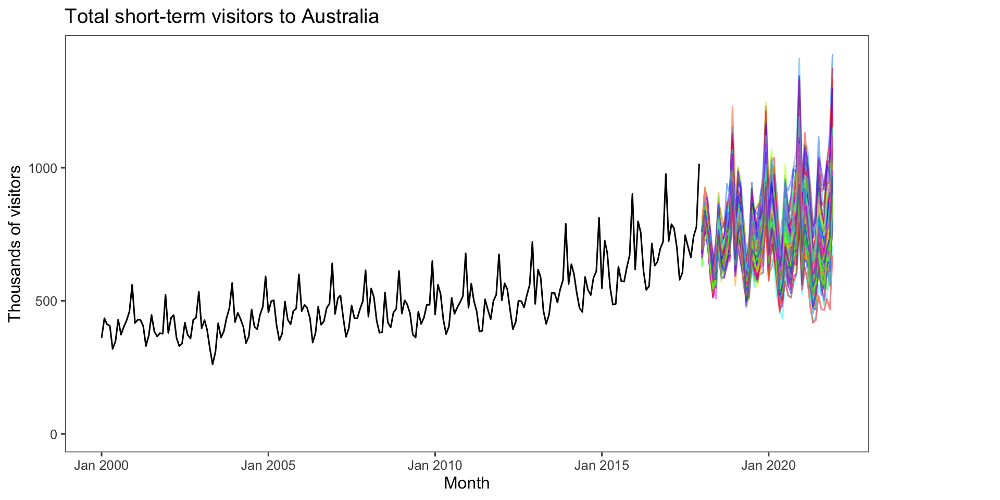
What is a forecast?
A forecast is an estimate of the probability distribution of a variable to be observed in the future.
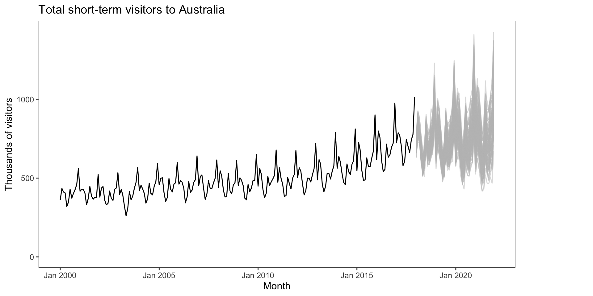
What is a forecast?
A forecast is an estimate of the probability distribution of a variable to be observed in the future.
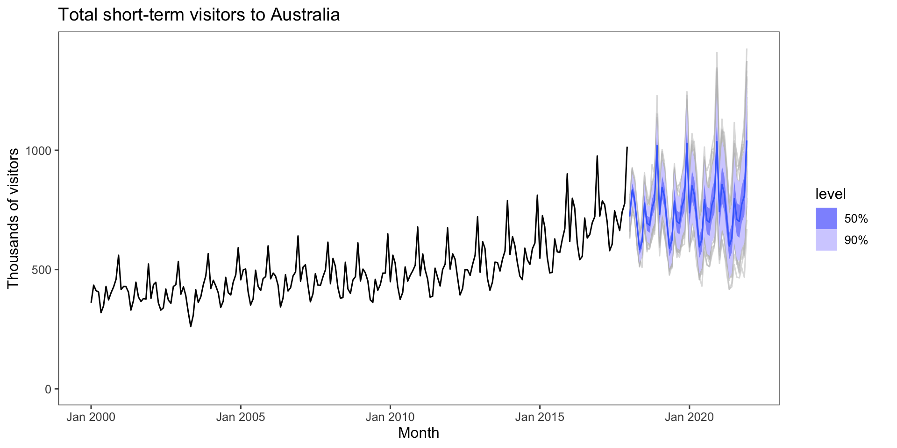
Prediction interval
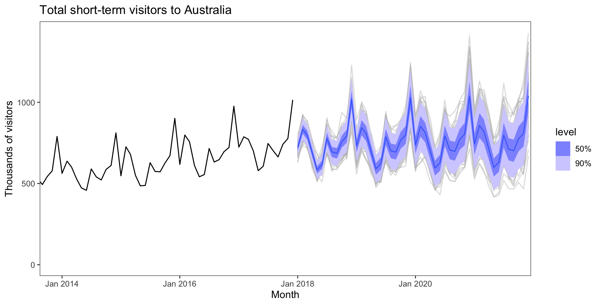
Visualising forecast distributions
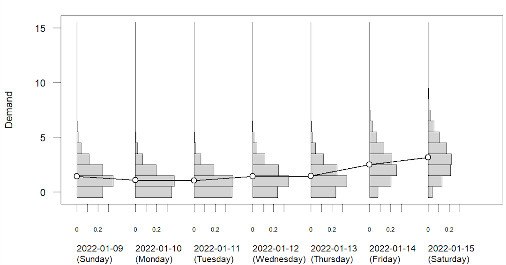
Forecast distribution
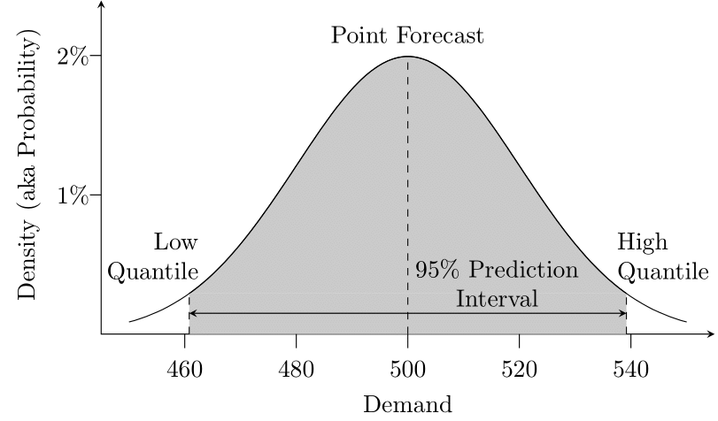
What can we forecast?
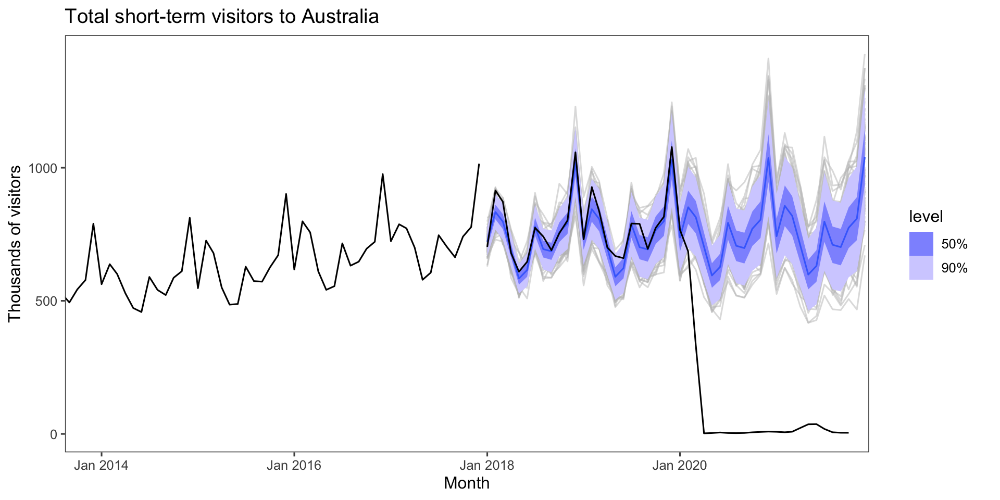
Which is easiest to forecast?
- daily electricity demand in 3 days time
- timing of next Halley’s comet appearance
- time of sunrise this day next year
- Google stock price tomorrow
- Google stock price in 6 months time
- maximum temperature tomorrow
- exchange rate of $US/£ next week
- total sales of anti diabetic drugs in Wales next month
- how do we measure “easiest”?
- what makes something easy/difficult to forecast?
Factors affecting forecastability
Something is easier to forecast if:
- we have a good understanding of the factors that contribute to it
- there is lots of data available;
- the forecasts cannot affect the thing we are trying to forecast.
- there is relatively low natural/unexplainable random variation.
- the future is somewhat similar to the past
- the forecast horizon is short
What data do we need for forecasting?
All information available at the time when we generate the forecast:
- Past/historical time series data on the variable we intend to forecast
- Past and future data about deterministic predictors/regressors
- Past and future data about stochastic predictors/regressors
- Expertise of individuals in an organization and any contextual information that may affect the forecast variable
- New information
Why does an organisation need forecast?
Why do you use forecast?
Forecasting required in many situation |
Forecast |
|---|---|
| Whether to build a new hospital in next 10 years? | ? |
| How many staff does a call center need next week? | ? |
| How many dose of vaccine is required next month? | ? |
An important aid to planning and decision making
- To inform decisions
- To provide evidences
Forecasting workflow
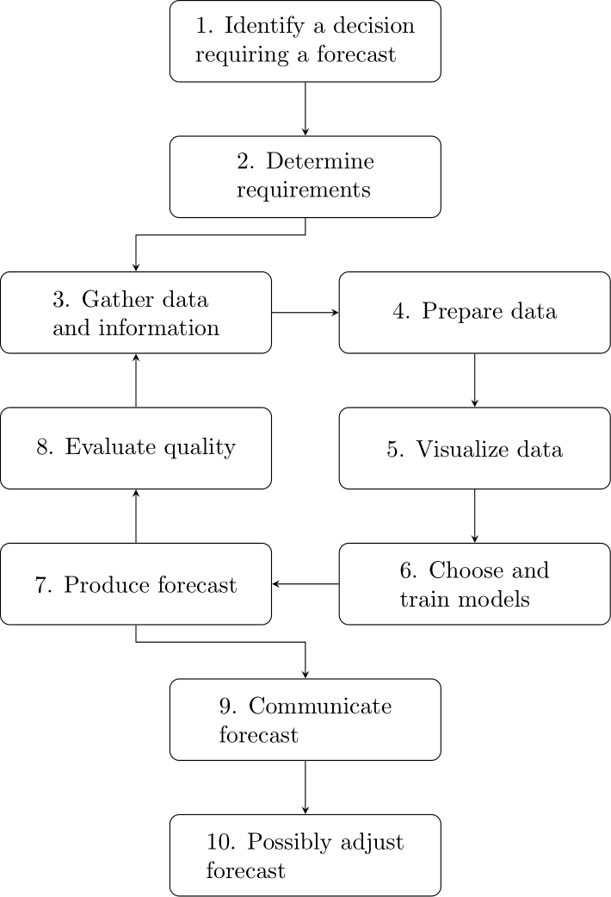
Determine requirements
- The forecast variable
- The forecast horizon
- The forecast frequency
- The temporal granularity
Statistical forecasting steps
- Prepare data.
- Visualise data.
- Choosing and fitting models (specify and train models).
- Produce forecast.
- Evaluate quality.
Time series data
Some examples of time series include:
- Four-yearly Olympic winning times
- Annual Google profits
- Quarterly Australian beer production
- Monthly rainfall
- Weekly retail sales
- Daily IBM stock prices
- Hourly electricity demand
- 5-minute freeway traffic counts
- Time-stamped stock transaction data
Example: Australian prison population
Craete a tsibble object
# A tsibble: 24,320 x 5 [1Q]
# Key: Region, State, Purpose [304]
Quarter Region State Purpose Trips
<qtr> <chr> <chr> <chr> <dbl>
1 1998 Q1 Adelaide South Australia Business 135.
2 1998 Q2 Adelaide South Australia Business 110.
3 1998 Q3 Adelaide South Australia Business 166.
4 1998 Q4 Adelaide South Australia Business 127.
5 1999 Q1 Adelaide South Australia Business 137.
6 1999 Q2 Adelaide South Australia Business 200.
7 1999 Q3 Adelaide South Australia Business 169.
8 1999 Q4 Adelaide South Australia Business 134.
9 2000 Q1 Adelaide South Australia Business 154.
10 2000 Q2 Adelaide South Australia Business 169.
# ℹ 24,310 more rowsUseful functions
| Frequency | Function |
|---|---|
| Annual | start:end |
| Quarterly | yearquarter() |
| Monthly | yearmonth() |
| Weekly | yearweek() |
| Daily | as_date(), ymd(),dmy(), mdy() |
| Sub-daily | as_datetime() |
Some forecasting methods
MEAN(y): Average method
- Forecast of all future values is equal to mean of historical data \(\{y_1,\dots,y_T\}\).
- Forecasts: \(\hat{y}_{T+h|T} = \bar{y} = (y_1+\dots+y_T)/T\)
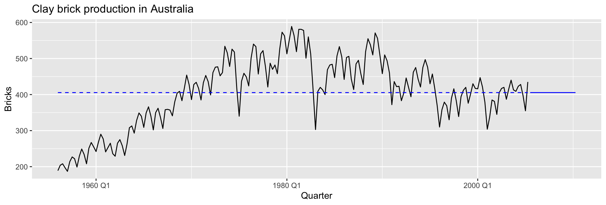
NAIVE(y): Naïve method
- Forecasts equal to last observed value.
- Forecasts: \(\hat{y}_{T+h|T} =y_T\).
- Consequence of efficient market hypothesis.
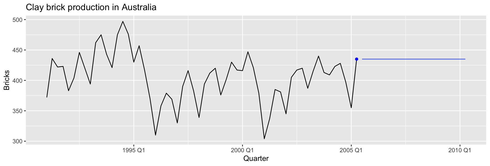
SNAIVE(y ~ lag(m)): Seasonal naïve method
- Forecasts equal to last value from same season.
- Forecasts: \(\hat{y}_{T+h|T} =y_{T+h-m(k+1)}\), where \(m=\) seasonal period and \(k\) is the integer part of \((h-1)/m\).
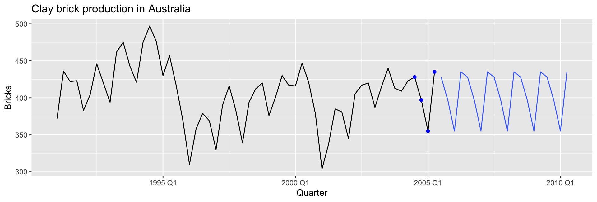
Exponential smoothing models
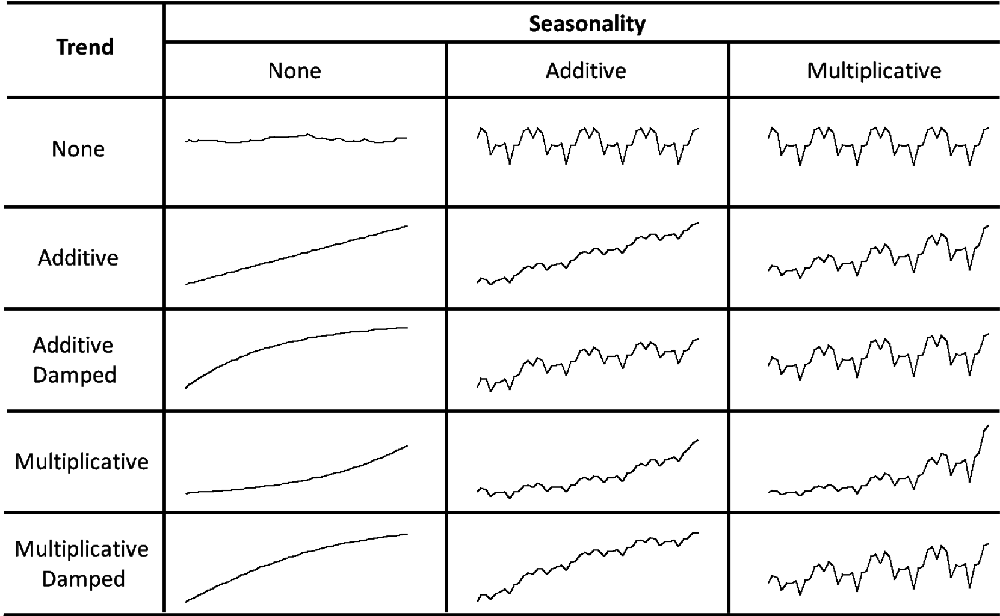
ETS models, ETS()
\[ \begin{array}{l@{}p{2.3cm}@{}c@{}l} \text{General notation} & & \text{ETS} & :\ \textbf{E}xponen\textbf{T}ial\ \textbf{S}moothing \\[-0.2cm] & \nearrow\!\!\!\! & \uparrow & \!\!\!\!\nwarrow \\[2pt] & \textbf{E}rror & \textbf{T}rend & \textbf{S}eason \end{array} \]
Error: additive (“A”) or multiplicative (“M”).
Trend: none (“N”), additive (“A”), multiplicative (“M”), or damped (“Ad”, “Md”).
Seasonality: none (“N”), additive (“A”), or multiplicative (“M”).
ARMA models, ARIMA()
\[ \begin{aligned} y_t &= c + \phi_1 y_{t-1} + \cdots + \phi_p y_{t-p} \\ &\qquad\quad + \theta_1 \varepsilon_{t-1} + \cdots + \theta_q \varepsilon_{t-q} + \varepsilon_t. \end{aligned} \]
- Combine ARMA model with differencing.
- \(d\)-differenced series follows an ARMA model.
- Need to choose \(p\), \(d\), \(q\) and whether or not to include \(c\).
ARIMA(\(p,d,q\)) model
| AR | autoregressive (lagged observations as inputs) |
|---|---|
| I | integrated (differencing to make the series stationary) |
| MA | moving average (lagged errors as inputs) |
- White noise model: ARIMA(0,0,0)
- Random walk: ARIMA(0,1,0) with no constant
- Random walk with drift: ARIMA(0,1,0) with constant
- AR(\(p\)): ARIMA(\(p\),0,0)
- MA(\(q\)): ARIMA(0,0,\(q\))
Model specification
- Model specification in fable supports a formula based interface
- A model formula in R is expressed using
response ~ terms- the formula’s left side describes the response
- the right describes terms used to model the response.
Attention: MODEL name is in capital letters, e.g.SNAIVE
Model estimation
The model() function trains models on data. - It returns a mable object.
Model fitting- example
The model() function trains models on data.
Extract information from mable
- The
report()function gives a formatted model-specific display. - The
tidy()function is used to extract the coefficients from the models. - We can extract information about some specific model using the
filter()andselect()functions.
Producing forecasts
- The
forecast()function is used to produce forecasts from estimated models. - h can be specified with:
- a number (the number of future observations)
- natural language (the length of time to predict)
- provide a dataset of future time periods
Producing forecasts
A fabl is a forecast table with point forecasts and distributions.
# A fable: 120 x 4 [1Q]
# Key: .model [6]
.model Quarter
<chr> <qtr>
1 Seasonal_naïve 2010 Q3
2 Seasonal_naïve 2010 Q4
3 Seasonal_naïve 2011 Q1
4 Seasonal_naïve 2011 Q2
5 Seasonal_naïve 2011 Q3
6 Seasonal_naïve 2011 Q4
7 Seasonal_naïve 2012 Q1
8 Seasonal_naïve 2012 Q2
9 Seasonal_naïve 2012 Q3
10 Seasonal_naïve 2012 Q4
# ℹ 110 more rows
# ℹ 2 more variables: Beer <dist>, .mean <dbl>Forecast distributions from bootstrapping
When a normal distribution for the residuals is an unreasonable assumption, one alternative is to use bootstrapping, which only assumes that the residuals are uncorrelated with constant variance.
A one-step forecast error is defined as \(e_t = y_t - \hat{y}_{t|t-1}\), \(y_t = \hat{y}_{t|t-1} + e_t.\)
So we can simulate the next observation of a time series using \(y_{T+1} = \hat{y}_{T+1|T} + e_{T+1}\)
Adding the new simulated observation to our data set, we can repeat the process to obtain \(y_{T+2} = \hat{y}_{T+2|T+1} + e_{T+2}\)
Generate many possible future using generate()
# A tsibble: 60 x 4 [1Q]
# Key: .model, .rep [5]
.model Quarter .rep .sim
<chr> <qtr> <chr> <dbl>
1 NAIVE(Beer) 2001 Q1 1 455.
2 NAIVE(Beer) 2001 Q2 1 409.
3 NAIVE(Beer) 2001 Q3 1 395
4 NAIVE(Beer) 2001 Q4 1 381.
5 NAIVE(Beer) 2002 Q1 1 335.
6 NAIVE(Beer) 2002 Q2 1 321
7 NAIVE(Beer) 2002 Q3 1 381.
8 NAIVE(Beer) 2002 Q4 1 440.
9 NAIVE(Beer) 2003 Q1 1 426
10 NAIVE(Beer) 2003 Q2 1 381.
# ℹ 50 more rowsUse forecast() function to generate probabilistic forecasts
# A fable: 12 x 4 [1Q]
# Key: .model [1]
.model Quarter Beer .mean
<chr> <qtr> <dist> <dbl>
1 NAIVE(Beer) 2001 Q1 sample[5000] 500.
2 NAIVE(Beer) 2001 Q2 sample[5000] 500.
3 NAIVE(Beer) 2001 Q3 sample[5000] 500.
4 NAIVE(Beer) 2001 Q4 sample[5000] 499.
5 NAIVE(Beer) 2002 Q1 sample[5000] 500.
6 NAIVE(Beer) 2002 Q2 sample[5000] 500.
7 NAIVE(Beer) 2002 Q3 sample[5000] 500.
8 NAIVE(Beer) 2002 Q4 sample[5000] 500.
9 NAIVE(Beer) 2003 Q1 sample[5000] 499.
10 NAIVE(Beer) 2003 Q2 sample[5000] 500.
11 NAIVE(Beer) 2003 Q3 sample[5000] 500.
12 NAIVE(Beer) 2003 Q4 sample[5000] 499.Prediction intervals
- Forecast intervals can be extracted using the
hilo()function.
# A tsibble: 8 x 6 [1Q]
# Key: .model [1]
.model Quarter
<chr> <qtr>
1 NAIVE(Beer) 2010 Q3
2 NAIVE(Beer) 2010 Q4
3 NAIVE(Beer) 2011 Q1
4 NAIVE(Beer) 2011 Q2
5 NAIVE(Beer) 2011 Q3
6 NAIVE(Beer) 2011 Q4
7 NAIVE(Beer) 2012 Q1
8 NAIVE(Beer) 2012 Q2
# ℹ 4 more variables: Beer <dist>, .mean <dbl>, `95%_lower` <dbl>,
# `95%_upper` <dbl>Prediction intervals
# A tsibble: 120 x 6 [1Q]
# Key: .model [6]
.model Quarter
<chr> <qtr>
1 Seasonal_naïve 2010 Q3
2 Seasonal_naïve 2010 Q4
3 Seasonal_naïve 2011 Q1
4 Seasonal_naïve 2011 Q2
5 Seasonal_naïve 2011 Q3
6 Seasonal_naïve 2011 Q4
7 Seasonal_naïve 2012 Q1
8 Seasonal_naïve 2012 Q2
9 Seasonal_naïve 2012 Q3
10 Seasonal_naïve 2012 Q4
# ℹ 110 more rows
# ℹ 4 more variables: Beer <dist>, .mean <dbl>, `50%` <hilo>, `75%` <hilo>Evaluating forecast accuracy
Evaluate forecast accuracy
- In order to evaluate the performance of a forecasting model, we compute its forecast accuracy.
- Forecast accuracy is compared by measuring errors based on the test set.
- Ideally it should allow comparing benefits from improved accuracy with the cost of obtaining the improvement.
Evaluate forecast accuracy- Business impact
- We should be choosing forecast models that lead to better business decisions
- least staffing costs, least emission, highest service level, least stock-out, least inventory, fastest response, least change in planing, for example.
- However, this is not always easy to obtain, therefore we might simply use methods that provide the most accurate forecast.
In-sample (training) vs. out-of-sample (test)
- Fitting and its residual are not a reliable indication of forecast accuracy
- A model which fits the training data well will not necessarily forecast well
- A perfect fit can always be obtained by using a model with enough parameters
- Over-fitting a model to data is just as bad as failing to identify a systematic pattern in the data
Forecast accuracy evaluation using test sets
- We mimic the real life situation
- We pretend we don’t know some part of data (new data)
- It must not be used for any aspect of model training
- Forecast accuracy is computed only based on the test set
Time series cross-validation
- Forecast accuracy averaged over test sets.
- Also known as “evaluation on a rolling forecasting origin”
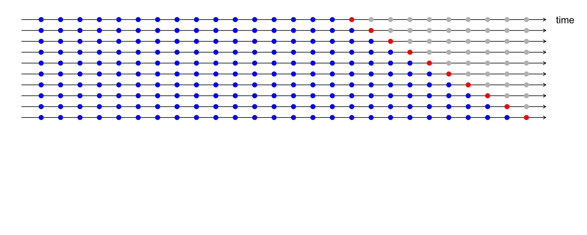
Creating the rolling training sets
There are three main rolling types which can be used.
- Stretch: extends a growing length window with new data.
- Slide: shifts a fixed length window through the data.
- Tile: moves a fixed length window without overlap.
Three functions to roll a tsibble: stretch_tsibble(), slide_tsibble(), and tile_tsibble().
For time series cross-validation, stretching windows are most commonly used.
Forecast errors
Forecast “error”: the difference between an observed value and its forecast. \[ e_{T+h} = y_{T+h} - \hat{y}_{T+h|T}, \] where the training data is given by \(\{y_1,\dots,y_T\}\)
Measures of forecast accuracy
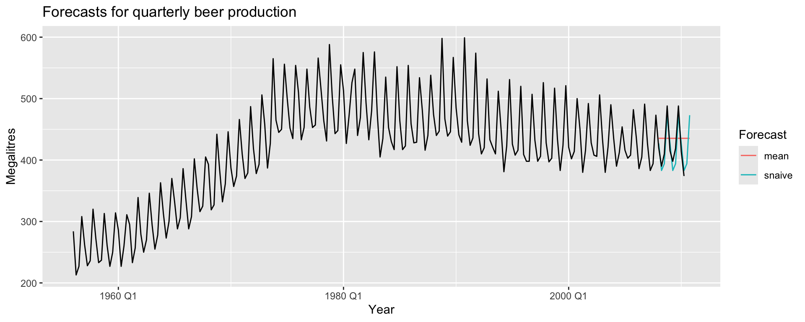
Measures of forecast accuracy
\[ \begin{aligned} y_{T+h} &= (T+h)\text{th observation},\quad h=1,\ldots,H,\\ \hat{y}_{T+h\mid T} &= \text{forecast of } y_{T+h} \text{ based on data up to time } T,\\ e_{T+h} &= y_{T+h} - \hat{y}_{T+h\mid T}. \end{aligned} \]
\[ \begin{aligned} \text{MAE} &= \text{mean}\!\left(\lvert e_{T+h}\rvert\right),\\ \text{MSE} &= \text{mean}\!\left(e_{T+h}^2\right),\qquad \text{RMSE} = \sqrt{\text{mean}\!\left(e_{T+h}^2\right)},\\ \text{MAPE} &= 100\,\text{mean}\!\left(\frac{\lvert e_{T+h}\rvert}{\lvert y_{T+h}\rvert}\right). \end{aligned} \]
- MAE, MSE, RMSE are all scale dependent.
- MAPE is scale independent but is only sensible if \(y_t\gg 0\) for all \(t\), and \(y\) has a natural zero.
Measures of forecast accuracy
Mean Absolute Scaled Error \[
\text{MASE} = \text{mean}(|e_{T+h}|/Q)
\]
- For non-seasonal series, scale uses naïve forecasts:
\(Q = \frac{1}{T-1}\displaystyle\sum_{t=2}^T |y_{t}-y_{t-1}|\)
- For seasonal series, scale uses seasonal naïve forecasts:
\(Q = \frac{1}{T-m}\displaystyle\sum_{t=m+1}^T |y_{t}-y_{t-m}|\)
where \(m\) is the seasonal frequency
Measures of forecast accuracy
Root Mean Squared Scaled Error \[
\text{RMSSE} = \sqrt{\text{mean}(e^2_{T+h}/Q)}
\]
- For non-seasonal series, scale uses naïve forecasts:
\(Q = \frac{1}{T-1}\displaystyle\sum_{t=2}^T (y_{t}-y_{t-1})^2\)
- For seasonal series, scale uses seasonal naïve forecasts:
\(Q = \frac{1}{T-m}\displaystyle\sum_{t=m+1}^T (y_{t}-y_{t-m})^2\) where \(m\) is the seasonal frequency
Measures of forecast accuracy
# A tibble: 2 × 10
.model .type ME RMSE MAE MPE MAPE MASE RMSSE ACF1
<chr> <chr> <dbl> <dbl> <dbl> <dbl> <dbl> <dbl> <dbl> <dbl>
1 mean Test -13.8 38.4 34.8 -3.97 8.28 2.20 1.96 -0.0691
2 snaive Test 5.2 14.3 13.4 1.15 3.17 0.847 0.729 0.132 Prediction interval accuracy using winkler score
Winkler proposed a scoring method to enable comparisons between prediction intervals:
- it takes account of both coverage and width of the intervals.
\[ \begin{aligned} W(l_t,u_t,y_t)= \begin{cases} u_t - l_t, & \text{if } l_t < y_t < u_t,\\[4pt] (u_t - l_t) + \dfrac{2}{\alpha}(l_t - y_t), & \text{if } y_t < l_t,\\[6pt] (u_t - l_t) + \dfrac{2}{\alpha}(y_t - u_t), & \text{if } y_t > u_t. \end{cases} \end{aligned} \]
Prediction interval accuracy
Quantile score
\[ \begin{aligned} Q_{p,t} = \begin{cases} 2(1-p)\,\big(f_{p,t} - y_t\big), & \text{if } y_t < f_{p,t},\\[6pt] 2p\,\big(y_t - f_{p,t}\big), & \text{if } y_t \ge f_{p,t}. \end{cases} \end{aligned} \]
Continuous Ranked Probability Score (CRPS)
\[\large \text{CRPS} = \text{mean}(p_j),\]
where
\[p_j = \int_{-\infty}^{\infty} \left(G_j(x) - F_j(x)\right)^2dx,\]
Continuous Ranked Probability Score (CRPS)
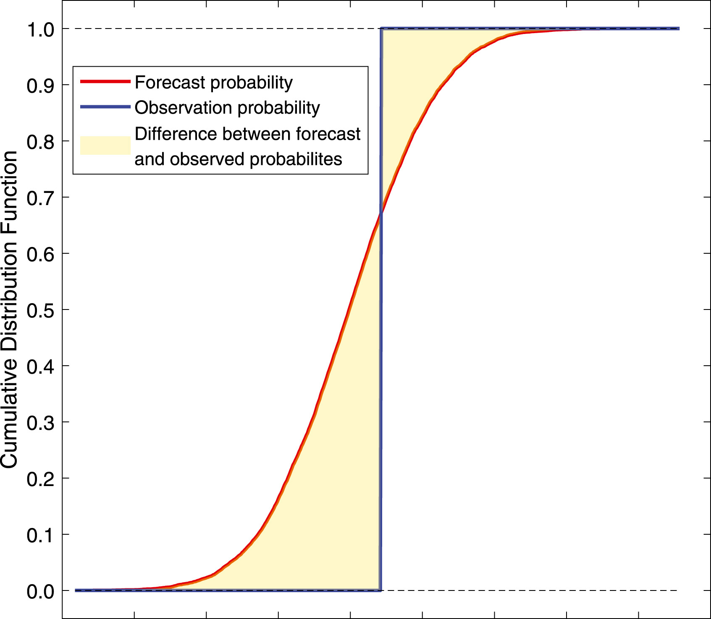
Quantile score and CRPS
Quantile score
Residual diagnostics
Fitted values
- \(\hat{y}_{t|t-1}\) is the forecast of \(y_t\) based on observations \(y_1,\dots,y_t\).
- We call these “fitted values”.
- Sometimes drop the subscript: \(\hat{y}_t \equiv \hat{y}_{t|t-1}\).
- Often not true forecasts since parameters are estimated on all data.
Forecasting residuals assumptions
Residuals in forecasting: difference between observed value and its fitted value: \(e_t = y_t-\hat{y}_{t|t-1}\).
- \(\{e_t\}\) uncorrelated. If they aren’t, then information left in residuals that should be used in computing forecasts.
- \(\{e_t\}\) have mean zero. If they don’t, then forecasts are biased.
Useful properties (for prediction intervals)
- \(\{e_t\}\) have constant variance.
- \(\{e_t\}\) are normally distributed.
ACF of residuals
We assume that the residuals are white noise (uncorrelated, mean zero, constant variance). If they aren’t, then there is information left in the residuals that should be used in computing forecasts.
So a standard residual diagnostic is to check the ACF of the residuals of a forecasting method.
We expect these to look like white noise.
Beer production - augment
# A tsibble: 218 x 6 [1Q]
# Key: .model [1]
.model Quarter Beer .fitted .resid .innov
<chr> <qtr> <dbl> <dbl> <dbl> <dbl>
1 SNAIVE(Beer) 1956 Q1 284 NA NA NA
2 SNAIVE(Beer) 1956 Q2 213 NA NA NA
3 SNAIVE(Beer) 1956 Q3 227 NA NA NA
4 SNAIVE(Beer) 1956 Q4 308 NA NA NA
5 SNAIVE(Beer) 1957 Q1 262 284 -22 -22
6 SNAIVE(Beer) 1957 Q2 228 213 15 15
7 SNAIVE(Beer) 1957 Q3 236 227 9 9
8 SNAIVE(Beer) 1957 Q4 320 308 12 12
9 SNAIVE(Beer) 1958 Q1 272 262 10 10
10 SNAIVE(Beer) 1958 Q2 233 228 5 5
# ℹ 208 more rowsReferences & resources
Any questions or thoughts? 💬